Feasibility Study
A. Robot Drilling
We evaluate the feasibility of the hardware platform for BVLOS teleoperation by performing drilling, anchoring, and bolting on ceilings, which are representative of overhead works. We considered ceilings made of concrete, gypsum, and acrylic materials in three different sites, for a total of 9 experiments. All tasks were successfully performed on concrete and gypsum materials in all three sites. For acrylic, only drilling succeeded, whereas anchoring and bolting failed in all sites. The failure of the two operations is because they rely on frictional forces, which acrylic does not provide due to its smoothness. In contrast, the rougher surfaces of concrete and gypsum offered enough friction for stable anchoring and bolting. We are exploring bimanual operation to address this limitation.
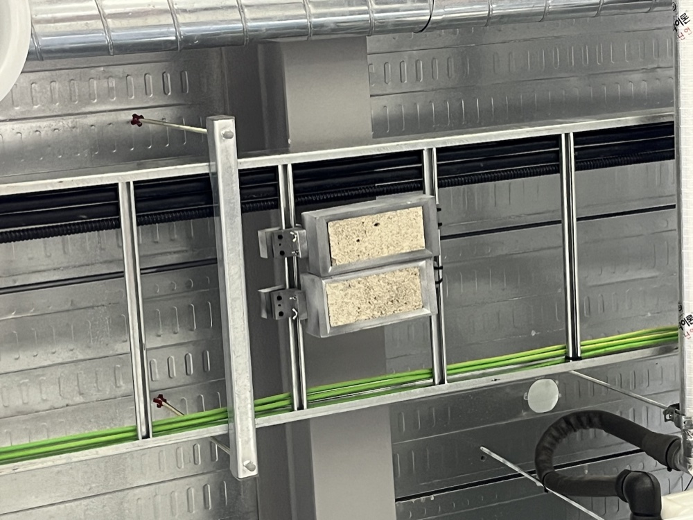
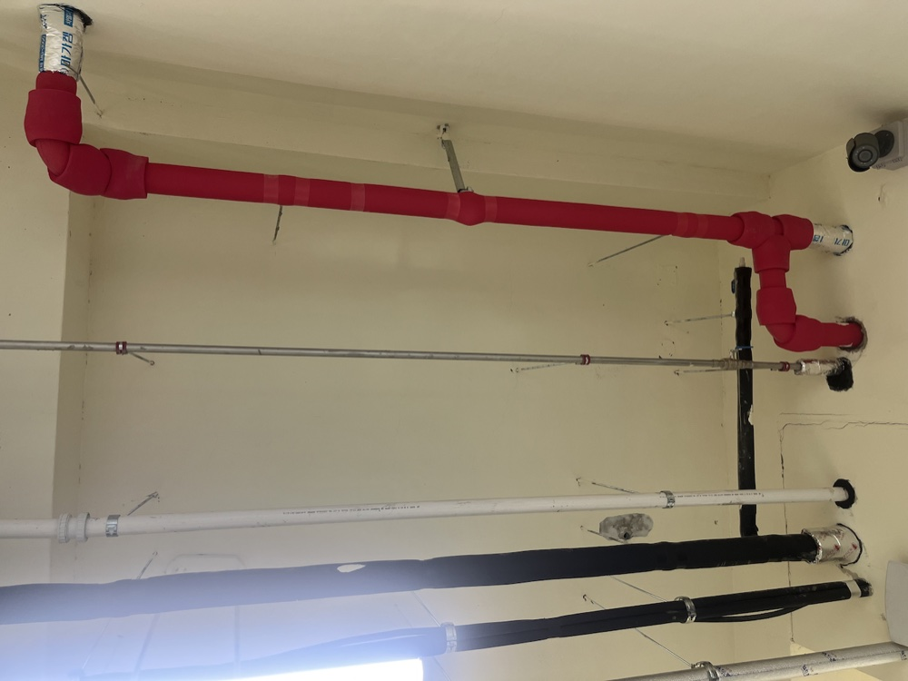
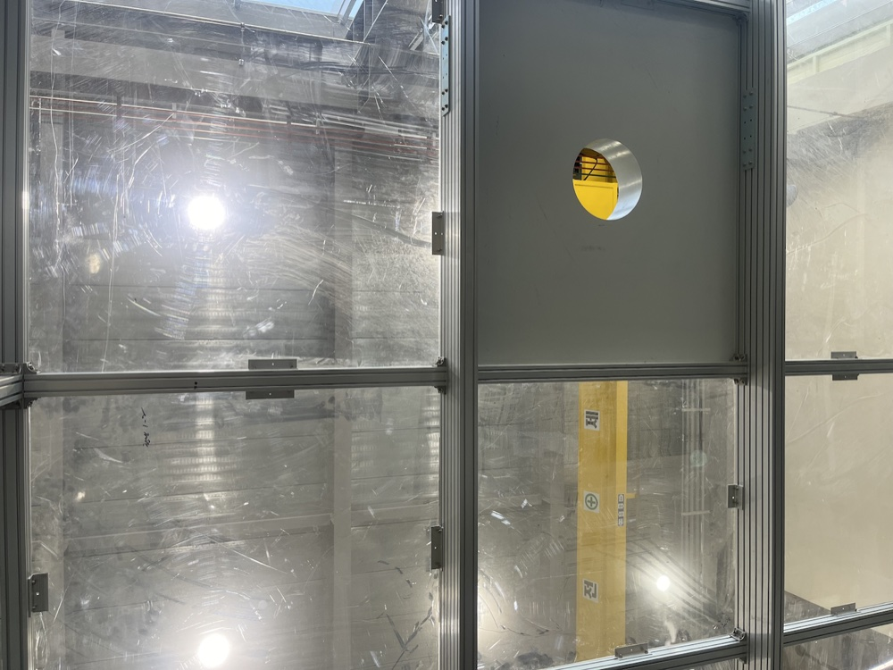
(a) Three different experimental sites
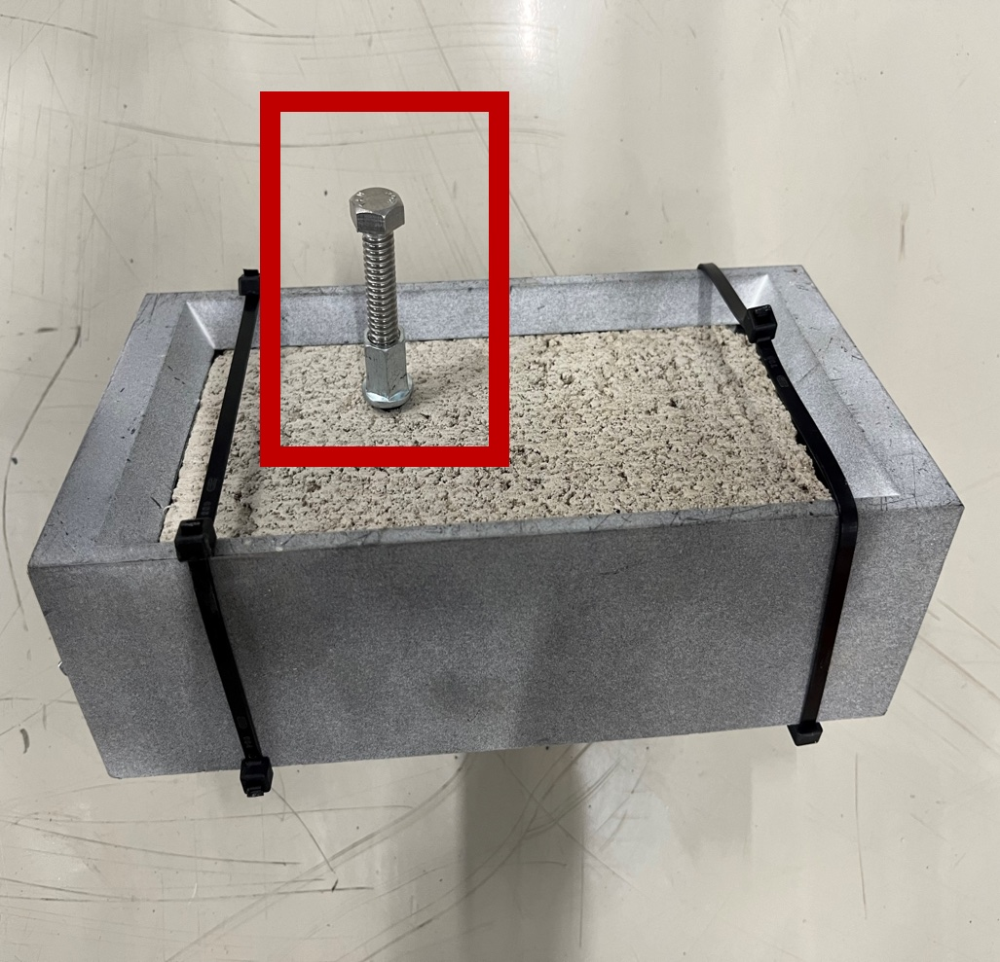
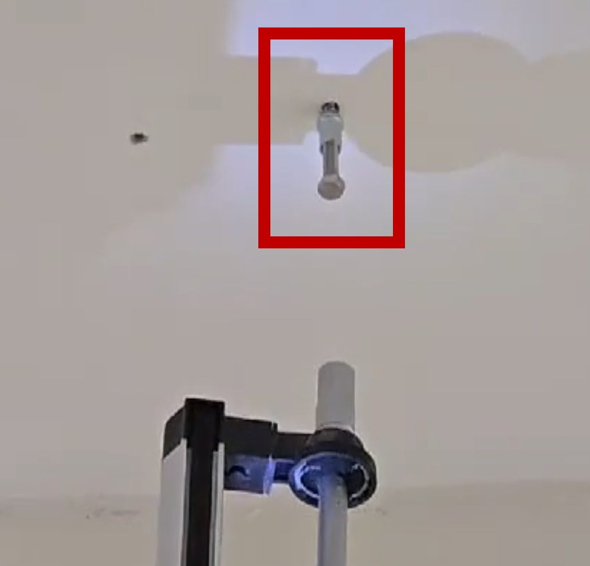
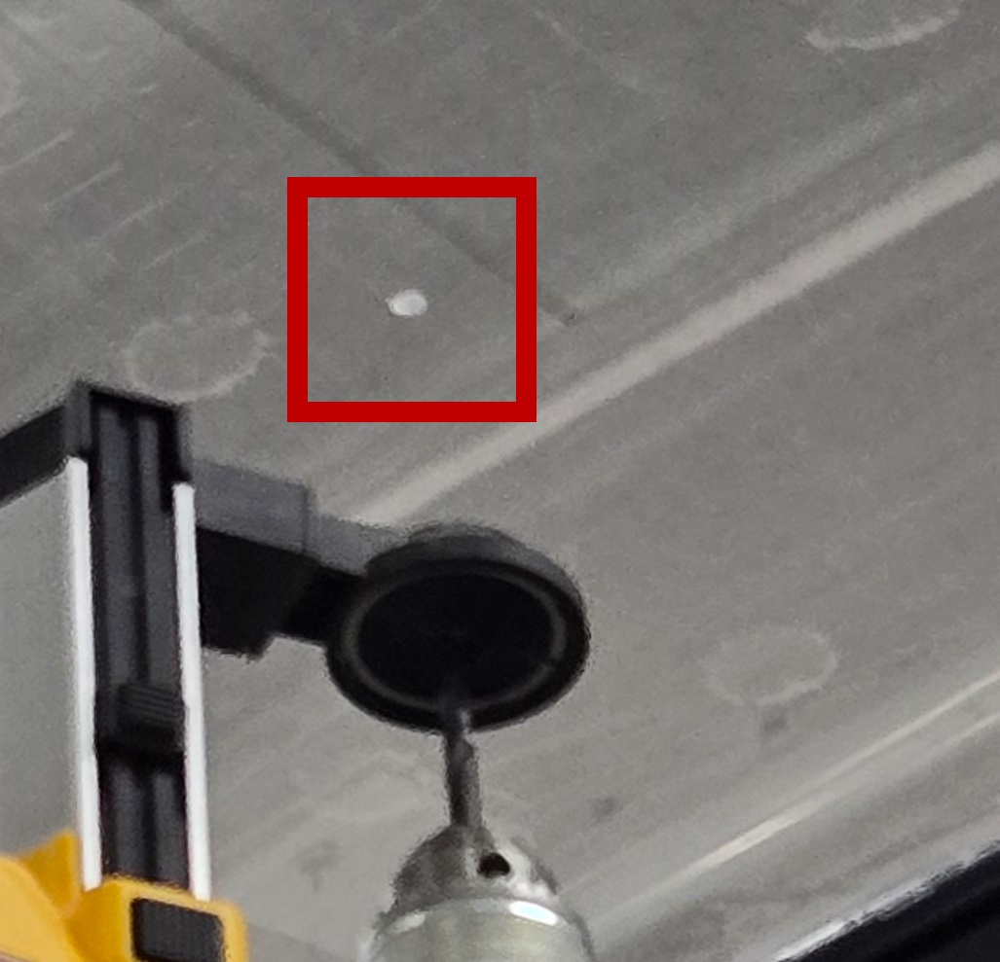
(b) Results from each site
Fig. 5: Experimental sites and results.| Method | Experimental Materials | ||
|---|---|---|---|
| Concrete | Gypsum | Acrylic | |
| Drilling | ✓ | ✓ | ✓ |
| Anchoring | ✓ | ✓ | ✗ |
| Bolting | ✓ | ✓ | ✗ |
B. Planning and Control
We present an initial evaluation of the suitability of the planning and control modules in dynamic environments using a 6-DoF xArm6 in a laboratory environment. The manipulator was assigned a goal end-effector position to navigate towards in a cluttered environment with both static and dynamic obstacles. A single RealSense D435 camera was used to provide observations of the obstacles from a fixed location, and an Aruco marker was used to track the velocity of dynamic obstacles, which may be replaced with DynaGSLAM. The results in Fig. 6 show that the manipulator follows a nominal trajectory to reach the desired goal configuration, while deviating from the nominal trajectory to avoid incoming obstacles as necessary. We observed that the safe bubble cover significantly reduces the number of collision checks, by up to tenfold compared to other baselines, while yielding comparable path lengths.
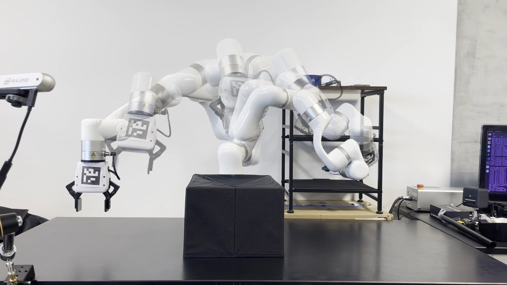
(a) Planned configurations
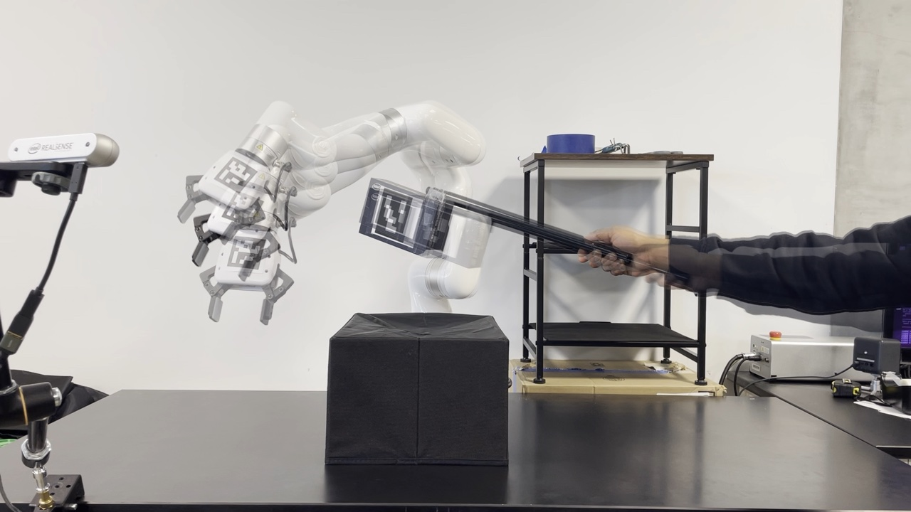
(b) Response to dynamic obstacle
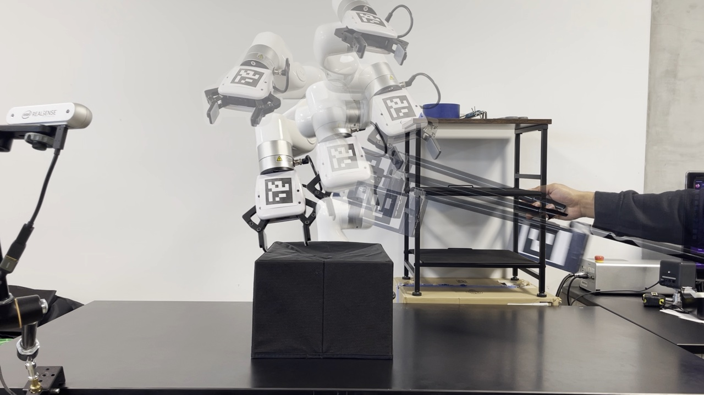
(c) Response to dynamic obstacle
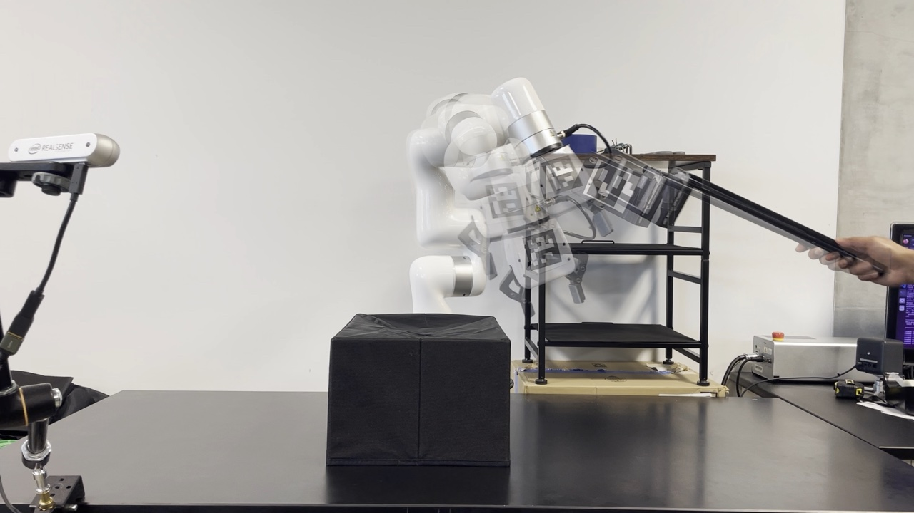
(d) Response to dynamic obstacle
C. Dynamic Mapping
We evaluate dynamic scene reconstruction with DynaGSLAM in two datasets, TUM and one collected during ceiling drilling experiments (Fig. 5). The qualitative results in Fig. 7 and the quantitative results in Table II show that DynaGSLAM renders RGB images accurately. This is owing to accurate reconstruction of dynamic environments despite moving objects and featureless ceilings. Such ability of handling moving objects allows photorealistic visual feedback even as the manipulator or work pieces are moving.
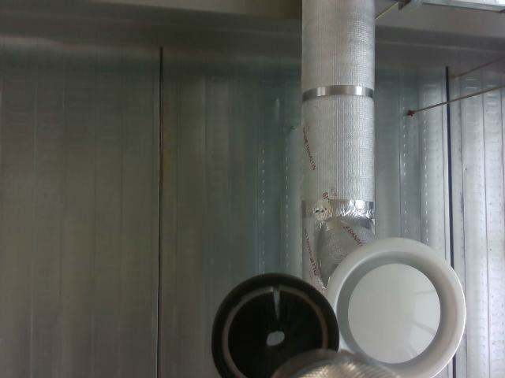
Ground truth
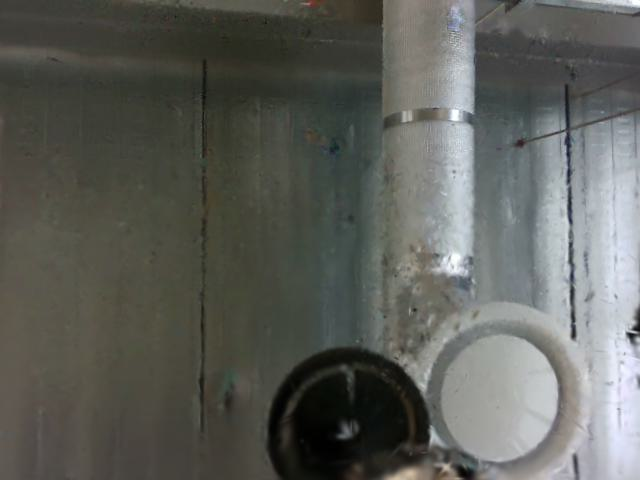
Rendered
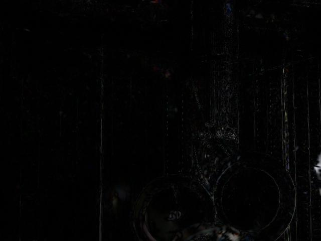
Error
(a) Construction Dataset (Fig. 5)
.jpg)
Ground truth
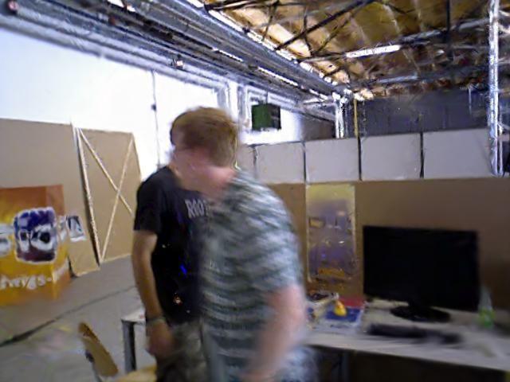
Rendered
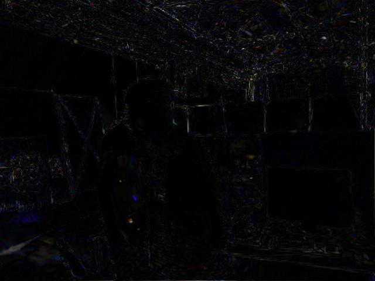
Error
(b) TUM Dataset
| Dataset | PSNR (dB) ↑ | LPIPS (%) ↓ | SSIM (%) ↑ |
|---|---|---|---|
| TUM [14] | 27.2 | 20.0 | 94.5 |
| Construction (Fig. 5) | 26.8 | 44.7 | 84.4 |